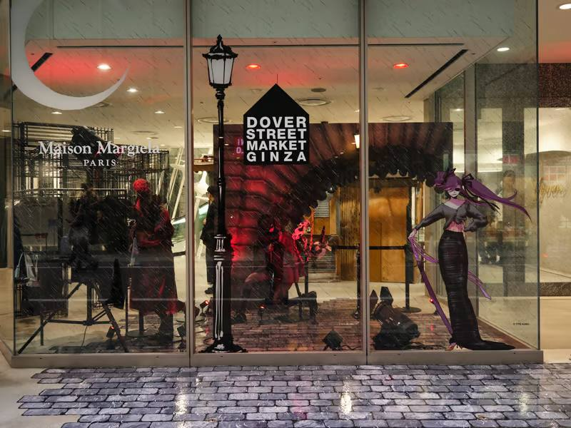

Tokyo, but with taste
A tighter, sexier guide for the trip — fashion, food, late-night energy, and the kind of places that actually feel like the city instead of tourist wallpaper.

Built to feel less like a list and more like a little world you step into on the ride over.
How to use this
Tap into any card for the full pitch, save the ones you want to hit, and jump straight to maps or booking when it matters. The flow is meant to feel cinematic, but still get you somewhere fast when you’re actually on the street.